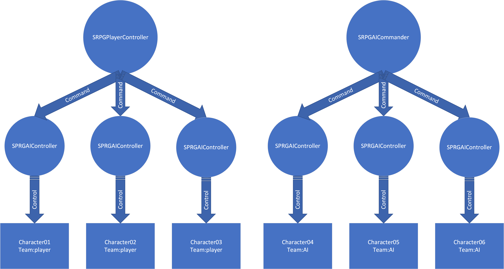
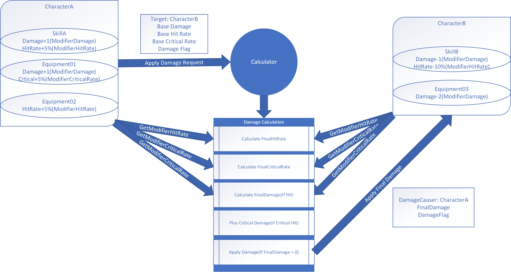

使用UE4制作SRPG Part1
本文不是手把手UE4入门教程，你需要了解UE4的基本运作机制：
- 了解UE4的GameMode，PlayerController，AIController，Character，Actor，Object
- 了解UE4的接口(Interface)
- 能够编写blueprint代码
- C++不是必须，虽然本文所提供的样例工程是由C++和blueprint混合编写，但大部分功能blueprint都能实现
项目地址： SRPGTemplate
Controller与Task
我们定义三个Controller类：
- SRPGAIController：继承自AIController，用来接收指令，执行特定操作
- SRPGAICommander：继承自AIController，代表真正意义上的AI
- SRPGPlayerController：继承自PlayerController，代表玩家
SRPGTask代表Character可以执行的任务，比如：
- 移动到点A
- 攻击敌人B
- 移动到点C，然后拾取某个物品
所有Character都由SRPGAIController控制，Player或者AICommander无法直接控制Character，需要通过为SRPGAIController分配Task来执行 移动， 攻击 等操作。
示例：
{kind=link}
这样设计能让逻辑更加清晰易懂，以及让某些功能实现起来更加容易。[1]
回合制
定义一个TBPlayer(Turn-based player)接口，SRPGPlayerController、SRPGAICommander都实现此接口。
GameMode维护一个TBPlayer队列，在游戏开始时收集/构造所有的TBPlayer并加入队列。 [2]
TBPlayer中定义一个OnEnterMyTurn函数，GameMode保存了所有的TBPlayer信息，当进入某个Player的回合时， 调用TBPlayer::OnEnterMyTurn通知此此Player进行相关操作(移动、攻击、使用技能和物品)，同时对其他Player和相关Character施加约束：
- 如果 其他Player 是玩家：隐藏某些UI，禁用某些事件 [3]
- 如果 其他Player 是AI：禁止它向SRPGAIController发送指令
- 对于Character：如果当前Player不是它的操纵着，那么它无法执行任何指令
通过施加上述约束，使游戏按回合进行。
Note
在战场女武神或者XCom2中，即使不在自己的回合，角色也能做出某些行动，比如攻击视野中移动的敌人， 可以通过修改上述第三条约束，让角色在不是自己回合时做出受限制的行动，这些行动自动触发，无需接收指令
GameMode提供NextPlayer函数，让Player在执行完相关操作之后结束自己的回合，当所有的Player都完成操作时，游戏的回合数+1。
网格
我的 Grid 插件实现了网格相关的功能，由C++编写，blueprint可以使用、扩展，你也可以选择自己实现。
主要的功能需求如下：
- 网格查询：根据坐标、中心网格+范围、位置等信息查询相关网格
- 网格绘制：将网格信息展现给玩家，Grid插件提供贴花(Decal)和轮廓线(Outline, XCom2-like)两种绘制方式
- 基于网格的寻路(Grid-based pathfinding)：给出起点、终点坐标，返回网格数组
- 基于网格的运动(Grid-based movement)：让Character沿着网格移动，而不是UE4的默认MoveTo行为(你也可以这么做，XCom2就是例子)
- 路线绘制：将移动路线展示给玩家，可以使用decal、Particle System或者其他方法，根据游戏需求而定，Grid插件的PathGuide使用UE4的FPrimitiveDrawInterface(PDI)绘制路线，并可以在起点和中点设置不同的贴花(XCom2-like)
网格相关的算法 RedBlobGames 有很详细的解释，这里就不重复造轮子了。
Note
如果你自己实现网格相关功能，并且只用blueprint，网格的绘制最简单的办法可能是贴花(decal)，Blueprint无法访问PDI接口，没办法直接画线，实现网格轮廓线可能比较麻烦，ProceduralMeshComponent+特殊的材质可能是个办法，但我没有验证过。
AI
AICommander的逻辑如下：
- 检查是否存在可行动的Character，如果不存在则跳转至7，否则执行2
- 生成所有可控Character的所有可执行的SRPGTask
- 评估每个SRPGTask的Utility(Utility的解释见下文)
- 根据Utility删除明显不合理的SRPGTask
- 根据Utility随机选择一个SRPGTask，分配给相应的Character并通知其执行
- 等待SRPGTask执行完成，然后回到1
- 结束回合
Note
Utility是一个[0,1]的浮点数，用来表示SRPGTask的合理度，0表示十分愚蠢的Task，1表示执行此Task可获得胜利，其他Task的Utility位于此之间。 Utility的评估函数直接影响AI的行为，是实现合理AI的关键。
Note
上述逻辑保证同一时间AICommander只会让一个Character行动，如果想让多个Character同时行动(在XCom2中，敌人可能三人一队，当发现玩家时，整个小队会同时移动到掩体后面)，可以 修改上述逻辑5，选择多个SRPGTask，分配给相应的Character并通知它们执行
Utility评估
SRPGTask提供一个GetExecuteResult函数，获取Task的执行(预测)结果TaskExecuteResult，包含以下信息：
- FinalPostion：执行此Task之后，Character的最终位置
- ApplyDamageInfoList：Character能对敌人造成多少伤害
- TakeDamageInfoList：Character可能受到多少伤害
- ApplyHealingInfoList：Character能治疗多少友军
- TakeHealingInfoList：Character能受到多少治疗
评估函数获取Task的TaskExecuteResult之后，评估以上信息，返回最终的Utility。
评估函数的实现可以包含sub-utility，比如PositionUtility，DamageUtility，HealingUtility，分别评估位置、伤害和治疗然后再将它们合并成最终的Utility，样例公式如下：
Utility = PositionUtility*PositionWeight + DamageUtility*DamageWeight + HealingUtility*HealingWeight
当Character生命值较高时，赋予DamageWeight相对较高的值，使角色倾向于进攻，当Character生命值较低时，赋予PositionWeight和HealingWeight相对较高的值，使角色倾向于逃跑和寻找治疗。
Note
sub-utility的计算可以自由设计，值域也可以不受限制，但必须保证最终Utility在[0,1]之间，确保各个SRPGTask之间是可比较的，如果Task1的Utility大于Task2的Utility，那么Task1应该优于Task2。
Utility评估完成后，AICommander使用以下逻辑选择一个Task执行:
- 过滤Utility非常低的Task
- 对于剩下的SRPGTask，求出它们的Utility之和TotalUtility
- 计算出各个Task被选择的概率 Probability = Utility / TotalUtility
- 根据计算出来的概率，随机选择一个Task
AICommander逻辑示例：
假设我们有5个Task:
- T1：移动到点A
- T2：移动到点B
- T3：移动到点C，拾取道具I
- T4：移动到点D，获取治疗
- T5：移动到点E，攻击某个敌人
AIComander逻辑如下：
- 评估它们的Utility，分别为U1=0.01, U2=0.1, U3=0.5, U4=0.6, U5=0.8
- T1的Utility为0.01实在太低，我们把T1直接排除，剩下T2,T3,T4,T5
- 求出TotalUtility = 0.1 + 0.5 + 0.6 + 0.8 = 2
- 算出T2,T3,T4,T5的概率分别为P2 = 0.1/2 = 0.05，P3 = 0.5/2 = 0.25，P4 = 0.6/2 = 0.3，P5 = 0.8/2 = 0.4
- 从T2,T3,T4,T5中随机选出一个Task执行，选中T2的概率为5%，T3的概率为25%，T4的概率为30%，T5的概率为40%
Note
随机选择一个Task而不是选择最优解是因为如果总是选择最优解会让AI行为可预测，有时还会让玩家的SL大法失效，影响游戏体验。
关于Utility更详细的介绍可以参考
Game AI Pro: Collected Wisdom of Game AI Professionals
Chapter 9 An Introduction to Utility Theory
Chapter 10 Building Utility Decisions into Your Existing Behavior Tree
Game AI Pro 2: Collected Wisdom of Game AI Professionals
Chapter 3 Dual-Utility Reasoning
伤害计算
定义一个类SRPGCalculator和一系列DataModifier接口，用于数值计算。
特定DataModifier用来修改对应的某项数据，比如ModifierDamage修改伤害量，ModifierHealing修改治疗量。
技能、装备、Buff/Debuff都可以实现DataModifier接口，Character提供函数返回指定类型的所有的DataModifier供SRPGCalculator使用。
伤害计算流程如下：
- Character发起请求对某个Actor造成伤害，并向Calculator提供相应的信息：目标(Target), 基础伤害(BaseDamage)，基础命中率(BaseHitRate)，基础暴击率(BaseCriticalRate)，额外信息(DamageFlag)
- Calculator获取发起者的所有ModifierHitRate接口(如果存在)，修改命中率
- Calculator获取目标Actor的所有ModifierHitRate接口(如果存在)，计算出最终命中率
- 以类似2、3的步骤计算最终暴击率
- 使用随机数判断是否命中、暴击
- 如果命中，以类似2、3的步骤计算最终伤害值
- 如果暴击，在步骤6的结果上加上暴击伤害加成
- 如果最终伤害值大于0，使用此数值对目标造成伤害
流程图如下：
{kind=link}
| [1] | 这个设计应该也适用于RTS，需要注意每个Controller都是一个Actor，当Character特别多时，慎用’GetAllActorsOfClass’。 |
| [2] | 大部分情况下只有两个TBPlayer，玩家和AI，如果存在玩家不可操作的友军，那么会出现第三个Player，三个以上比较少见。 |
| [3] | 比如隐藏 下一回合 按钮，禁止选中角色等 |